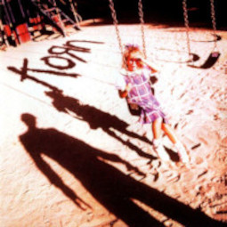

Discografia
O Korn, desde seu surgimento, tem marcado a cena musical com álbuns que exploram as profundezas da alma e desafiam os limites do metal. Sua discografia é um verdadeiro tesouro para os fãs do gênero, com cada álbum apresentando uma nova faceta da banda.
Os discos mais importantes
Dentro das discografia da banda tem os dois albuns mais importates, estes são:
Korn (1994)

O primeiro álbum autointitulado do Korn, lançado em 1994, foi um marco na história do rock. Com seu som pesado, e suas musicas
Blind ,
clown
e ball tongue com letras introspectivas e uma sonoridade que mesclava elementos do metal, rock alternativo e hip-hop, a banda californiana revolucionou a cena musical e deu origem ao nu metal.
Aqui está a lista completa das faixas do álbum "Korn" (1994):
- Blind
- Ball Tongue
- Need To
- Clown
- Shoots and Ladders
- Divine
- Faget
- Lies
- Helmet in the Bush
- Proud
- Daddy
Follow the leader
O álbum foi um grande sucesso comercial, alcançando a primeira posição em quatro paradas, incluindo a Billboard 200 com 268 mil unidades vendidas apenas na primeira semana após o lançamento. Follow The Leader é considerado pelos membros do Korn como o álbum de maior sucesso comercial, sendo certificado cinco vezes como platina pela RIAA.